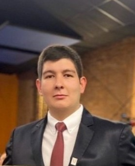

About

Electronic Engineer with a postgraduate specialization in telematics network security (Universidad El Bosque) and a Master's in Digital Security (Pontificia Universidad Javeriana). Research interests include autonomous vehicle security and digital forensics applied to critical systems.
Several years of experience in enterprise IT infrastructure, covering Windows Server, Linux, virtualization platforms, and Microsoft Azure. Additional background in penetration testing, ethical hacking, and technology risk management.
Currently teaching at Universidad El Bosque and working as IT Cloud Engineer Specialist at Inchcape Digital.
Research
- Cybersecurity and Autonomous Vehicles
- Digital Forensics Applied to Critical Systems (On-Premise and Cloud)
- Vulnerability Analysis in Enterprise Systems
Venture
SaaS platform for WhatsApp Business automation. Provides AI-powered multi-agent customer service, real-time dashboards, and integration with Meta's official API.
Publications
- 2024 Safeguarding Connected Autonomous Vehicles: A Cybersecurity Perspective
- 2024 Design and Implementation of a Pilot Forensic Laboratory Specialized in Cybersecurity Incident Response for a Public Entity in the District of Bogotá
- 2023 Information Security Risk Assessment at TrueSecure S.A. Using the MAGERIT Methodology and Risk Treatment Plan
Academic Experience
Coordinated research activities in cybersecurity and digital forensics. Supervised undergraduate theses and contributed to academic publications.
Professional Experience
Cloud infrastructure administration and engineering.
IT infrastructure administration.
Administration of Windows Server and Linux systems. Active Directory, SMTP, WSUS, RDS, and virtualization on VMware and Hyper-V.
Support and administration of Linux and Windows Server systems (Level 1-2). DNS zone management and hardware support for HP ProLiant, Lenovo ThinkSystem, and Dell PowerEdge servers.
Operations for Veritas NetBackup and HP Data Protector. Backup and restore for Windows, Linux, VMware, Hyper-V, and databases: Oracle, MS Exchange, MS SQL, MySQL, SAP.
Education
Teaching and research scholarship, WhiteLab Research Group
Thesis: Development of an instrument for patterning thermal sensors using linear regression
Notable achievements
- 2nd Place, UNROBOT, National University of Colombia, Bogotá (2017)
- 2nd and 3rd Place, Robomatrix Latin American Robotics League (2017)
- 1st Place, Sumo Robot, EXPO UdeC, University of Cundinamarca, Chía (2015)
Contact
You can reach me at cesarr_beltran@javeriana.edu.co or connect on LinkedIn.